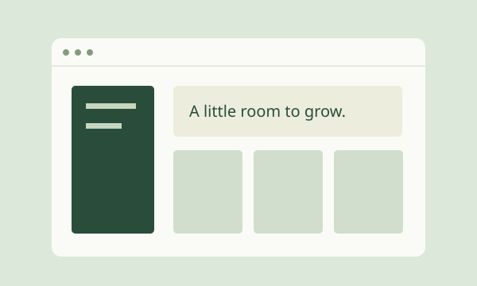
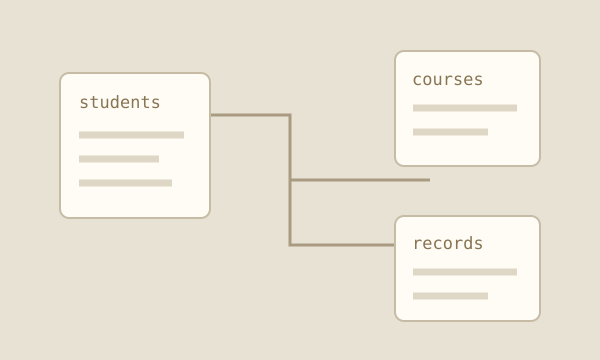
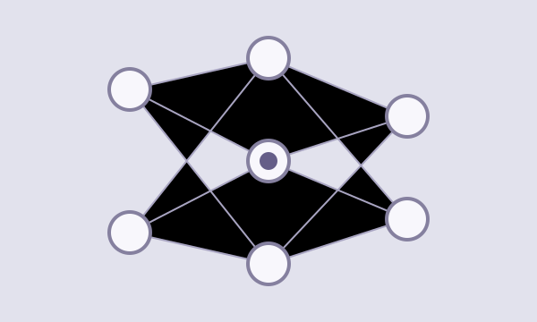

01 / WEB DEVELOPMENT
Campus Connect
A friendly space for students to discover campus events and stay connected.
STUDENT. BUILDER. CURIOUS MIND.
BS Computer Science / Class of 2027
A student exploring the intersection of thoughtful design and practical technology. I enjoy building for the web, making sense of data, and learning something new along the way.
Explore my projectsMY TOOLKIT
LEARNING BY MAKING

01 / WEB DEVELOPMENT
A friendly space for students to discover campus events and stay connected.

02 / DATABASE
A structured database to organize student records, courses, and enrollments.

03 / AI & MACHINE LEARNING
Exploring how machine learning can find sentiment in everyday text.
THE SEMESTER AT A GLANCE
Courses
06New things to discoverAssignments
12Completed this semesterProjects
03Ideas brought to lifeAttendance
96%Showing up, every dayA MOMENT TO REMEMBER
HASHIM · ACADEMIC ACHIEVEMENT
Recognized for academic dedication and outstanding performance in the Computer Science program.
GOOD THINGS START WITH A CONVERSATION